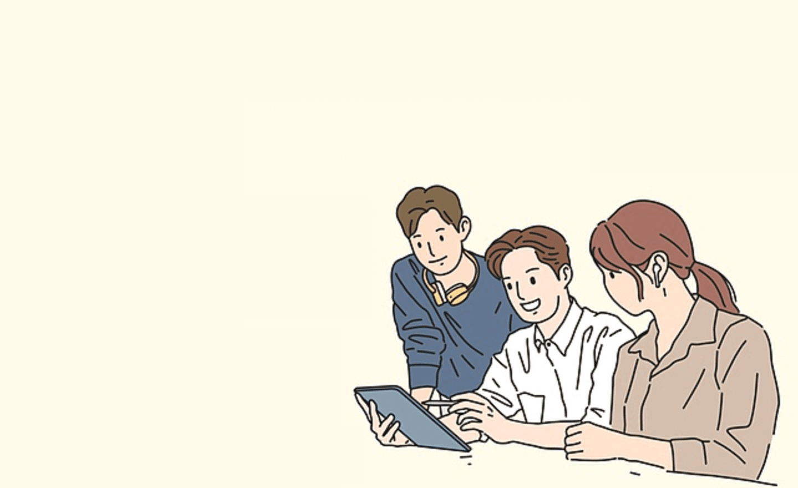

개인의 성격 특성이 삶의 다양한 영역에 어떤 영향
을 주는지 파악하기 위한 평가 도구입니다. 판단 과
정, 행동양식, 대인관계 스타일과 같은 3가지 차원
에 따라 16가지 성격유형 중 하나로 분류되며, 직업
생활과 대인관계에 영향을 많이 주는 5가지 성격
특성을 좀 더 깊이 있게 분석하여 제시합니다.
검사 대상 및 문항 구성
검사는 성인을 대상으로 하며, 성격 유형 척도를
판단하는 27개의 문항으로 구성됩니다.
검사 시간은 약 30분 정도 소요됩니다.
성격 유형 검사는
각각의 차원은 어느 한 쪽이 더 좋고 나쁜 것이 없으며,
단순히 개인의 선호 경향이 다름을 의미합니다.
T
과제 지향형
과제 중심적인
결정을 잘 내리는 유형
P
과제 지향형
다른 사람들과의 관계를
중요시하는 유형
C
안전 지향형
기존의 질서와 규칙을
중요시하는 유형
L
혁신 지향형
개성적이고 변화와
혁신을 추구하는 유형
E
외향형
많은 사람들과 잘
어울리고 자기 표현을
잘하는 유형
I
내향형
보다 독립적이고,
수용적인 경향을
나타내는 유형
김국민님께서는
이미 성격 유형 검사를 받으셨습니다.
검사 결과를 보시려면 아래의 [검사 결과 보기]
를 선택하십시오.
재검사를 원하시면 아래의 [다시 검사하기]를
선택하십시오.
재검사를 실행하시면 이전에 받으신 검사
결과는 삭제됨을 유의하시기 바랍니다.
성격 유형 검사는
각 문항을 주의 깊게 읽은 다음, 2개의 예시 중에서
자신이 일상적으로 느끼고 행동하는데 더 가깝다고
생각되는 것을 선택하세요.
1번문항
2번문항
27번문항
성격 유형 검사에 참여해 주셔서 감사합니다. 김국민님이 선택한 내용을 제출하시겠습니까?

홍길동님은외향적인 조력자 입니다.ENTP
체계적이고 활동적인 사람
실제적이고 현실적인 방식으로 사람들에게 필요한
존재가 될 때 성취감을 느끼는 조력자입니다.
규칙과 전통이 있는 상황에서 좀 더 편안하게
느끼고 자신의 잠재력을 잘 발휘할 수 있습니다.
다른 사람을 만나고 대화하는 것을 즐기며
대인관계가 넓고 사람에 대한 관심이나 배려가
많은 사람입니다.
다만 새로운 상황에 적응하는 것이 익숙하지
않으며, 정해진 규칙을 위반하는 사람은 불편해
할 수 있습니다.
유형의 강점
안정적이고 성실하여 신뢰감을 준다.
보수적인 직장에서도 잘 적응할 수 있다.
헌신적이고 책임감이 강해 자상하고 존경 받는
윗사람이 될 수 있다.
양심적이고 정해진 규칙을 잘 지킨다.
조직의 권위를 존중하며 예의 바르다.
보완할 점
새로운 상황에 적응하는 것이 힘들다.
기존의 방식과 다른 방식이나 새로운 의견을
잘 받아들이려 하지 않는다.
집단의 규칙을 바꾸려는 사람과 갈등이 생기면
화해가 어려울 수 있다.
사람들로부터 인정과 격려가 지속되지 않으면
흥미를 상실할 수 있다.
적합한 일과 직업환경
목표와 방식이 명확히 정해져 있는 일
일을 하기 위해 준비할 시간이 충분히 주어지는 일
노력을 들인 만큼의 대가를 정확히 예상할 수
있는 환경
조직이 안정되고 예측할 수 없는 일들이 많지
않은 환경
어려움과 스트레스
성실하고 책임감이 강하기에 자신이 맡은 바를
잘 해내는 장점이 있으며 변화가 그리 크지 않은
안정적인 환경을 선호합니다. 반면 많은 정보를
파악하여 스스로 자신에 맞는 목표를 정하고
그에 맞는 계획을 융통성 있게 실천하는 능력은
상대적으로 부족할 수 있습니다. 스스로 모든 것을
알아서 처리해야 하는 상황에 봉착하게 되면
스트레스를 느끼고 심리적으로 부담을 겪게 됩니다.
또한, 새로운 환경이나 변화에 적응해야 할 때
주변으로부터 충분한 지지와 격려를 받지 않으면
자신감을 잃을 수 있습니다.
대인관계에서 갈등이 생기면 일에 지장을 많이
받을 수 있어 주의가 필요합니다.
이렇게 해보세요
기존의 질서와 규범이 어느 정도 고정된 직장
환경이라 할지라도 변화는 생기기 마련이고
이에 따라 융통성 있게 대처하는 기술을 습득하는
것이 가장 중요할 것입니다.
즉, 새로운 것에 대한 심리적인 저항을 줄이고
자기만의 독창성을 개발할 필요가 있습니다.
타인과의 관계를 좋게 유지하되 객관적인 일 처리에
있어서는 사소한 감정에 휘둘리지 않도록 조심하고,
고집스럽게 자신만의 방식을 고수하기보다는 유연하게
타인의 의견을 받아들이는 태도를 기르기 위해 노력한다면
도움이 될 것입니다.